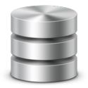

Robomongo: your next shell
Although powerful, the Mongo shell does suffer from being a strictly console centric experience – multiple sessions require multiple terminals, results scroll away, repetitive commands or honing a function require command line history traversal and so on. That’s why the open source RobomongoThis is just browsing though; to get to the power controls of Robomongo, double click on one of the collections. Robomongo will open the collections into a tab in the main part of the window and do a db.collection.find() for the first 50 documents in the collection, displaying the results. By default, the results are rendered in a tree-view but above and to the right of the results are controls to also view as a spreadsheet-style table or as a JSON/text document.
{kind=link}
Next to the controls, a pair of text fields allow setting the offset and number of documents to display at a time and arrow buttons which makes it easy to page through the results. Unwieldy scrolling results in a terminal are not a problem with Robomongo. The result window also displays how long that result took to get so you can get a feel for performance.
The query itself is shown above the results in an editable multiline text area – that’s where we can expand and refine our queries. This isn’t just a query window; anything you can do in the shell you can do here, including defining JavaScript functions and running them. The query is run only when you want it run, by clicking the “play” arrow in the toolbar, typing Command/Control-Enter in the text box or pressing F5. Note that if you have not placed parentheses after a function name and hit Command/Control-Enter, Robomongo shows you the JavaScript behind that function.
One big advantage over the raw Mongo shell is that Robomongo also allows you to save and load this text area so you can save raw scripts without wrapping them in a function and using the database as a storeOne of the newest features in Robomongo is the support for SSH and SSL connections which we mentioned earlier. The SSL connection feature is experimental and limited, in part because MongoDB doesn’t come with SSL by default. The SSH tunneling feature is more interesting as it doesn’t rely on the database having any particular features. When setting up the MongoDB server connection, you specify a host name to SSH into, a user to connect as and either a password or private key file and passphrase to connect with. A warning is in order here as the password or passphrase are both, currently, visible in the user interface and stored as plain text in the .config/robomongo/robomongo.conf file so appropriate security measures should be applied to your local host.
{kind=link}
Anyway, with this SSH configuration, when Robomongo is asked to connect, it creates an SSH tunnel using the login credentials and then connects to the MongoDB instance through that tunnel. A typical configuration would have the MongoDB running on the same host as the SSH tunnel instance. That said, MongoHQ doesn’t have SSH logins – the feature can still be useful though to protect traffic from the open internet by acquiring oneself an Amazon EC2 micro instance to act as the end of the tunnel for you. This tunnel then comes out within Amazon’s infrastructure and in a position to open a less snoopable connection to MongoHQ servers.
In development
It’s a substantial new feature in the GPLv3 licensed Robomongo which, at version 0.8.4, is still in “early beta”. As such it still has stability and performance issues, but in our experience, far fewer than would be expected. Robomongo’s source has been built in C++ with the Qt framework which has allowed it to be developed for Windows, Mac OS X and Linux at the same time yet still deliver a native application on each.
Probably the biggest current omission is that it doesn’t sort out replica sets so users have to change master every now and then to get around that. Development of Robomongo is driven, as usual, by the issue tracker but also by donations through a Magic Backlog which allows users to donate and prioritize which features are added and when particular bugs get fixed. Robomongo makes life on MongoDB so much easier; it’s a credit to the developers behind it.